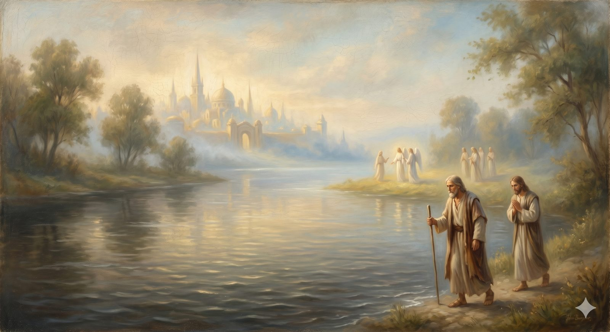

The River of Death
The bridgeless river before the gates — death the defeated enemy, dying in faith, and the companion who holds you up.
"O death, where is your victory? O death, where is your sting?... thanks be to God, who gives us the victory through our Lord Jesus Christ." 1 Corinthians 15:55–57 (ESV)
There is no bridge. Between the Land of Beulah and the gates of the Celestial City runs a deep, cold river, and Bunyan is unsparing about it: the pilgrims, seeing the City so close, ask if there is any other way, and are told that none has crossed except by this water — only two men, in all of history, were taken to the City without passing through it. The river is death. And when Christian steps into it, the strong, seasoned pilgrim who fought Apollyon and escaped Doubting Castle begins to sink, and is seized by terror, and cries out that the waters are going over his head.
This is the last and most honest landmark before the end, and it does not flinch. Death is real, and the fear of it is real, and the road will not pretend otherwise. But notice already the two things Bunyan gives us in the same scene: that even a strong believer may find the crossing terrifying — and that he does not cross alone.
Part OneThe last enemy, named honestly
Scripture does not soften death into a friend or a doorway or "just a part of life." It calls death an enemy — the last enemy, the one still to be destroyed. This honesty is itself a gift, because it means your dread of death is not a failure of faith or a lack of trust. It is a true response to a genuine evil. Death was not part of the world as God made it; it is an intruder, the wages of the brokenness named all the way back at the City of Destruction. To grieve it, to fear it, to rage against it, is not unbelief. It is agreement with God, who also calls it an enemy.
And yet — this is the turn the whole road has been building toward — it is a defeated enemy. The empty tomb the pilgrim saw beside the Cross was the first crack in death's power; the resurrection was the firstfruits, the promise that what happened to Christ will happen to all who are his. So the river must still be crossed, and the crossing is real and cold and frightening, but it is no longer a drowning. It is a passage. Death keeps its terror but has lost its finality. The believer goes into the water, but the water is no longer the end of the road; it is the last stretch of it.
In plain terms
Christianity never tells you death isn't scary or isn't bad. It calls death an enemy — which means your fear of it is honest, not faithless.
What it says instead is that the enemy has been beaten. Death still has to be walked through, and the walking can be hard and frightening. But because of the resurrection, it is a crossing now, not a drowning — the far bank is real, and the King is on it.
Part TwoWhat waits on the far side
The road has already said, at the very start, that the trouble with death needed answering, and the mountains and the City make the answer specific. The New Testament draws a distinction worth holding: between the moment after death and the final hope beyond it. To die, for the believer, is immediately to be with Christ — Paul calls it "far better," and Jesus tells the dying thief beside him, today you will be with me in paradise. Not annihilation. Not an unconscious sleep. Not a vague drifting. Presence, conscious and personal, with the One the whole journey was for.
But that blessed presence is not the end of the story, and this is where Christian hope outruns the "clouds and harps" caricature entirely. The pilgrim with Christ after death still awaits something further: the resurrection of the body, when Christ returns and the dead are raised, not as ghosts but as embodied people in a remade world. The river leads first to the City — to being with Christ — and points beyond even that to the day when soul and body are reunited and the whole creation is made new. We will follow that hope to its end at the final landmark. Here it is enough to know what lies immediately across the water: not darkness, but the face of the King.
Part ThreeYou do not cross alone
Return to Christian sinking in the river, because Bunyan's most important point is in what happens next. As Christian flounders, overwhelmed and convinced he will drown, it is Hopeful — the companion who joined him out of Vanity Fair — who holds him up, keeps his head above the water, and speaks to him: be of good cheer, my brother, I feel the bottom, and it is good. And Bunyan tells us the depth of the river is not the same for every pilgrim; it rises and falls with the state of their faith, deeper for some and shallower for others, but never beyond the reach of a brother's hand and the King's keeping.
This is the final appearance of a truth the road has insisted on from the beginning: you were never meant to make this journey alone, and you do not make its last crossing alone either. The companions given along the way — the church, the friends, the ones who joined you and the ones you joined — are with you even here, at the edge. And beneath them all is the bottom Hopeful felt: the faithfulness of God, solid under the deepest water, holding up every pilgrim who steps in trusting him. Christian finds his footing, and the two friends come up out of the river together, on the far side, where shining ones are waiting to lead them up to the gate.
“Be of good cheer, my brother — I feel the bottom, and it is good.”
And now there is only the last short ascent. The river is behind them, the City is before them, its gates catching a light that is brighter than any they have seen — and the whole long road is about to arrive at the place it was always going.